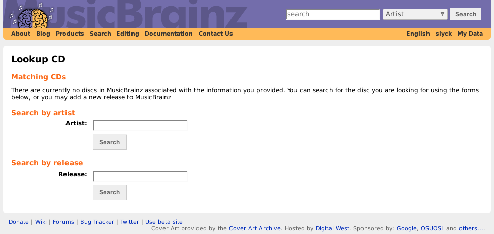
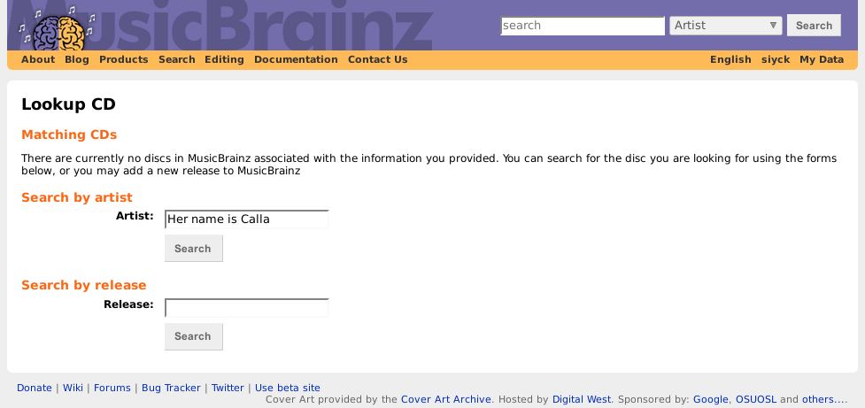
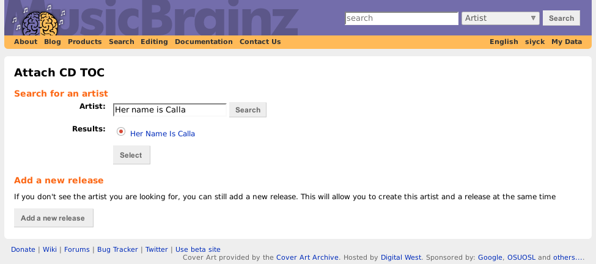
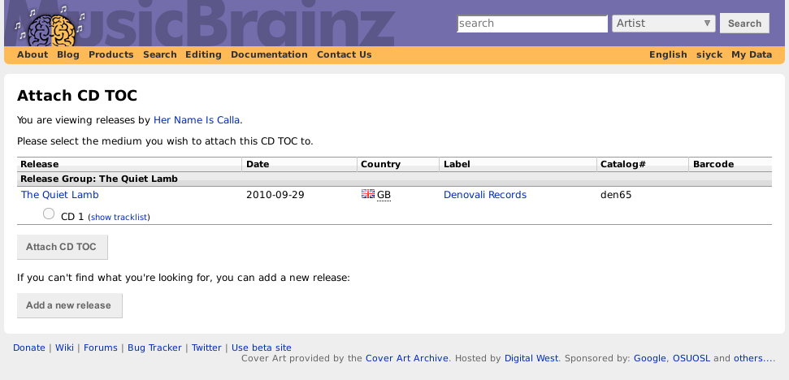
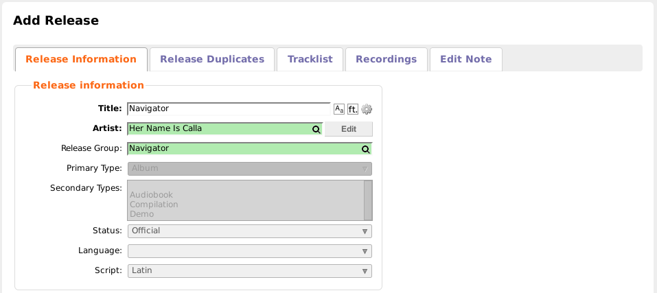
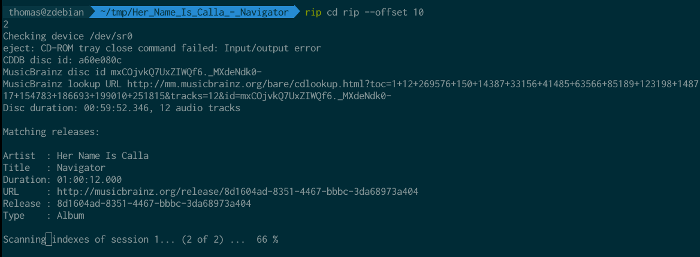
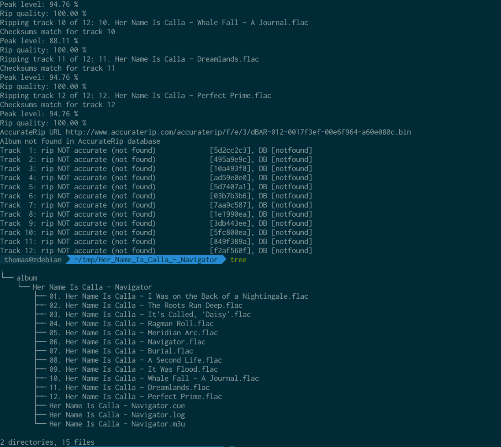
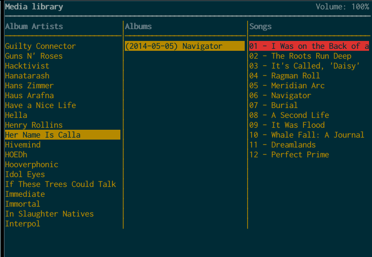
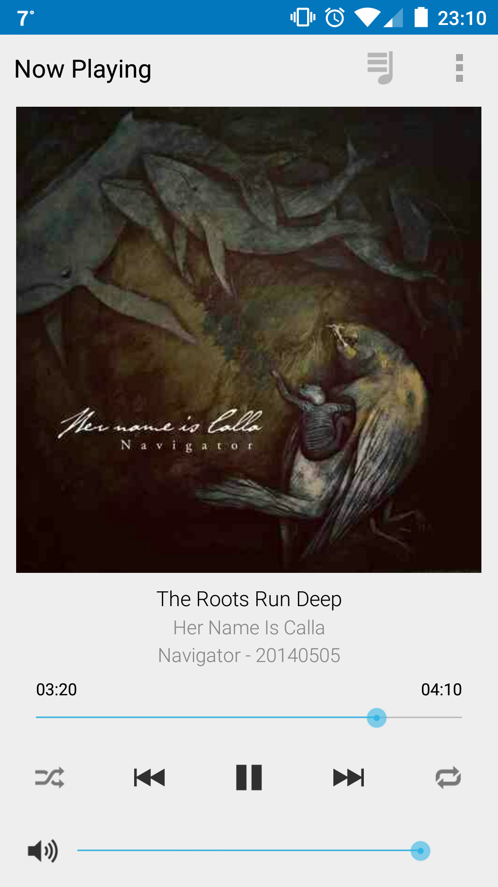
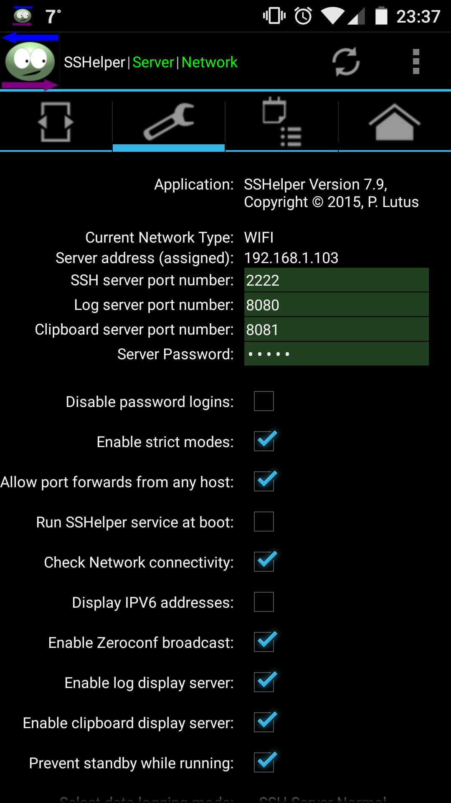

I wanted to take the time to talk about how I manage my music on Linux. I use the following tools:
morituri, to rip CDs,beets, to manage my music library,mopidy, as a music server,ncmpcpp, as a music server client,SSHelperandrsync, to sync music to my phone.

Ripping a CD: morituri
I use morituri to rip CDs.
I just got a CD with a book I bought, Her name is Calla‘s album Navigator. I will use it as an example in this blog post.
Finding the drive’s offset
You only have to do this once (for each CD drive). Insert a CD in your drive, then run rip offset find. Use a wellknown album: Her name is Calla‘s album was “not found in AccurateRip database”, so I tried again with Franz Ferdinand‘s album of the same name.
1 | $ rip offset find |
Ripping a CD to FLAC
We wil rip the CD to FLAC, a loss-less open-source codec. 102 is the offset we found above.
1 | $ mkdir Her_Name_Is_Calla_-_Navigator |
Eh, what’s going on here? Well, morituri tries to find the CD on MusicBrainz to automatically tag it. MusicBrainz is like Wikipedia, but for bands, albums, and other music releases.. In this case, the CD was not recognized, and it’s suggested we add it to MusicBrainz ourselves.
After logging in, we can continue the process of creating the CD on MusicBrainz.





Now that we created the release, our ripping should go fine. I had to click the link one more time to link the TOC of the CD to the release, but everything went smoothly after that.


Now that the rip is complete, we can import these files into beets.
Importing and tagging files: beets for organisation
I use beets to manage my music library.
Importing files into beets
After setting up a library, you can start to import music. You use beet import for this. As an example, let’s import the album we ripped earlier.
1 | $ beet import Her\ Name\ Is\ Calla\ -\ Navigator |
As you can see, beets will also contact MusicBrainz, where it finds the album. I like to have all of my music backed by MusicBrainz, that way, I know the metadata is always correct.
The power of beets is correcting music. For example, if the artist name on the FLAC files was “her name is calla”, beets would offer to correct this to Her Name Is Calla.
We can check that beets imported the album:
1 | $ beet ls her name is calla |
Looks great! Now we actually want to listen to this. But first, I’ll talk a little about my beets setup.
beets setup
This is my ~/.config/beets/config.yaml:
1 | directory: ~/music |
Music directory and library
I use the idiomatic ~/music as a place to store my music. This is where beets will store my music. ~/.beets_library.blb stores beets‘ music library (as a SQL database).
Import style
copy: yes makes beets copy the files, instead of moving them. That way, nothing I’m working on suddenly disappears. Moving is obviously faster though, you might want to consider it.
Path
The paths defines how albums will be stored in the music directory. I like the Artist name - Album name (year)/Track number - Track name convention, which is expressed by $albumartist - $album ($year)%aunique{}/$track $title. $albumartist is the artist responsible for the album (there can be tracks of different artists on one album), this keeps the album together. %aunique adds a unique identifier in case there are duplicate names.
Plugins
Here are some of the plugins I use I wanted to highlight:
fetchartwill grab album covers from the web, and add them to your librarylastgenrewill get the genre for songs from last.fmlyricswill get track lyrics from a variety of sourcesscrubwill remove extra tags not used or added bybeetsfrom music filesconvertis used to convert music to other formats
Convert
These settings are for when I’m converting music. I convert to MP3 to save space on my phone, I don’t really need FLACs there. copy_album_art will copy album art (obviously), dest selects a destination folder.
Playing music: mopidy as the music server
I use mopidy as a music player. I used to use plain old mpd, but mopidy is more flexible. I installed it using apt.
My configuration
1 | [mpd] |
hostname = :: binds to all local addresses. The [scrobbler] setup is used to scrobble to last.fm.
In [local], the music directory is defined. I also define some excludes: the defaults and .m4a, since the latest mopidy struggles to play those.
And lastly, an auth token to play music from Soundcloud.
Making mopidy scan for new music in the library
mopidy isn’t constantly watching the library for changes, we have to let it know about them. mopidy local scan does exactly that.
After scanning, restart mopidy:
1 | $ killall mopidy |
Playing music: ncmpcpp
I use ncmpcpp as an mpd frontend. mopidy presents itself as an mpd-compatible server, which means other mpd clients work for it too.
I’m not going to fully introduce ncmpcpp here, but you can switch to the list of albums by pressing 4, then use the mouse or arrow keys to navigate. Searching is simple too: /, your query, and enter. You can play tracks by pressing enter, and queue them using space. For more on ncmpcpp, check out the Arch Wiki.

ncmpcpp config
One thing that annoys me, is that ncmpcpp sorts by artist by default, and not albumArtist. You can change this in the Media Library view, but to change the default, edit ~/.ncmpcpp/config:
1 | media_library_primary_tag = "album_artist" |
Control through Android: MPDroid
mopidy is mpd-compatible. This means that you can use most mpd clients to control it. For example, I control my laptop’s mopidy remotely using MPDroid.

Syncing to my phone
I don’t always have my laptop with me, but I don’t want to be musicless during those times. I carry my phone with me pretty much all the time, so wouldn’t it be an idea to put music on that?
Converting
Music is converted using the beet convert command. I already talked about the configuration of that command earlier. Now we’re actually going to use it. beet convert will convert all the files in your library, this may take a very long time. For now, we will convert a small subset.
Using beet ls, we check what files will be selected for a query. We try out the query calla, this will match tracks in which the word calla appears:
1 | $ beet ls calla |
Looks reasonable. Let’s convert them!
1 | $ beet convert calla |
Looks like it worked!
Selecting
My phone is too small to carry my entire music library. That’s why I make a selection of what music to put on it. I manage this in a directory ~/phone_music, this is the directory that will be synced to my phone. All that this directory contains, is a bunch of symlinks to ~/converted_music/... folders.
We will select the album from before by symlinking it:
1 | ~/phone_music$ ln -s ../converted_music/Her\ Name\ Is\ Calla\ -\ Navigator\ \(2014\)/ |
I wrote a little script to automate this the first time:
1 |
|
rsync server on my phone: SSHelper
I tested out multiple solutions for syncing to my phone (Samba server on my laptop, USB OTG cable, mounting my phone…) but none were particulary reliable or handy. The solution I came up with was running a server on my phone, and rsyncing from my laptop.
SSHelper goes on my Android. After running, I rsync into it from my laptop.

Now I run rsync to synchronize:
1 | $ rsync -avzL --no-perms --no-times --size-only --info=progress2 -e 'ssh -p 2222' . 192.168.1.103:SDCard/Music |
The beautiful thing is that rsync is built to be robust: if it’s interrupted, for any reason, you can just continue later.
Listening on my phone
I used to use Google Play Music, but I’ve recently made the switch to Poweramp. I’m not sure if I’ll continue using it. Play Music feels very intuitive and is a breeze to use.
Keeping track: last.fm
last.fm may have a reputation as a dead site, I still use it to track my music.
mopidy
mopidy has a scrobbling plugin aptly called Mopidy-Scrobbler. Configuration is easy:
1 | $ cat ~/.config/mopidy/mopidy.conf |
On my phone
On my Android phone, I use Simple Last.fm Scrobbler, a no-nonsense scrobbler. It features a cache, in which it stores scrobbles if you’re offline, to scrobble them when you’re back online.
Legality
What we did here was ripping a CD for personal use. We also placed it on our phone. In Belgium, this is legal, as it falls under “private copies”. For more information, see here. Obviously, uploading this to the internet or a Bittorrent network is not legal, and not ethical either.